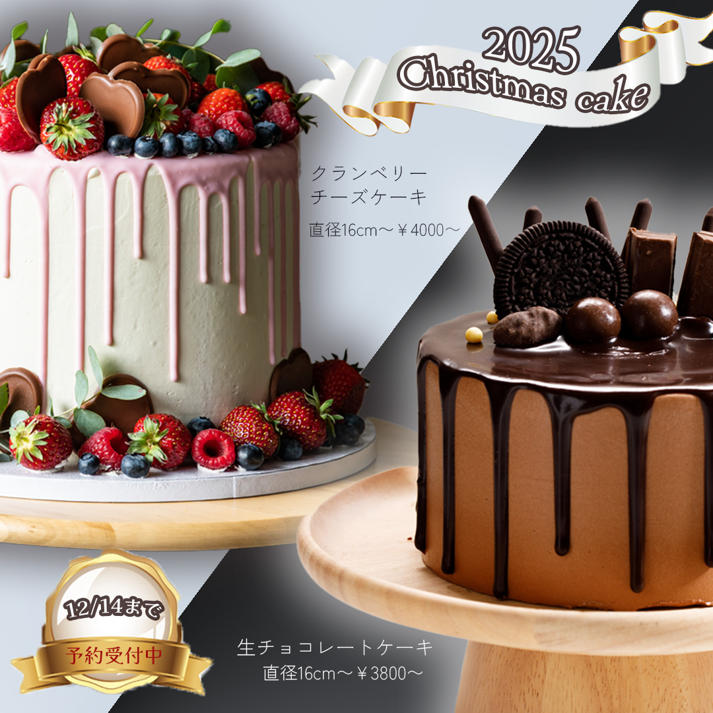
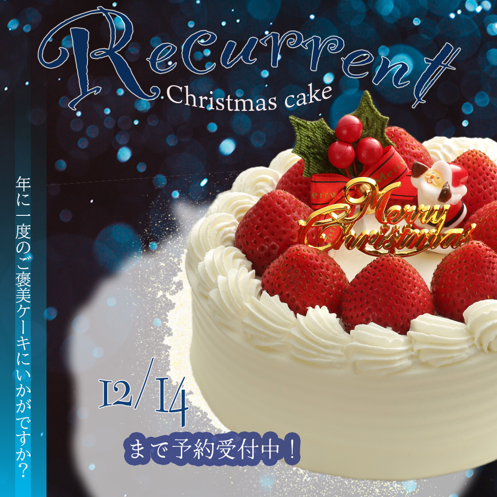
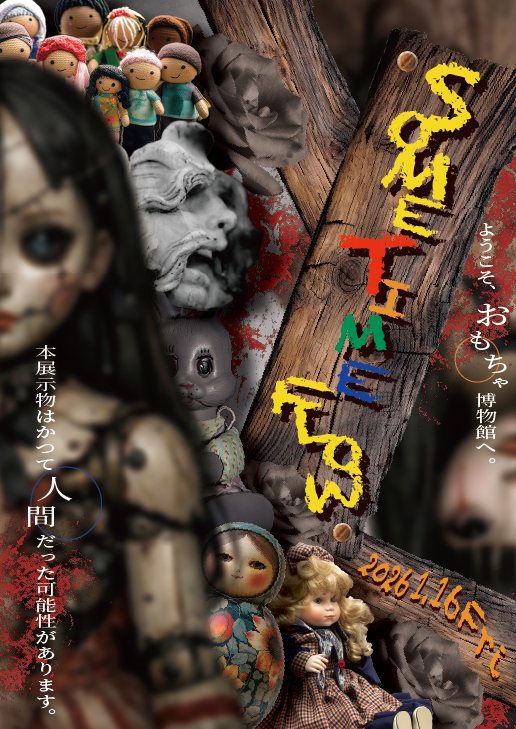
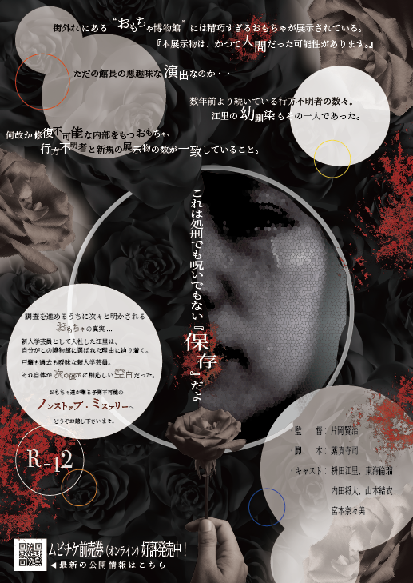
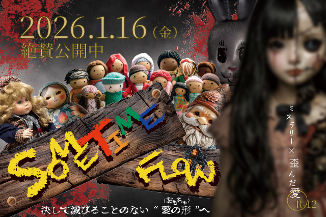
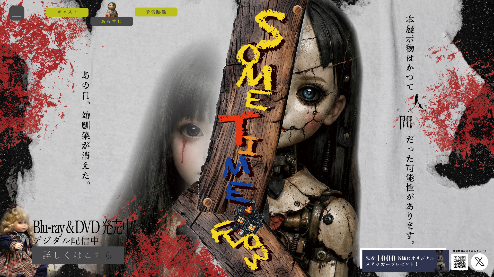
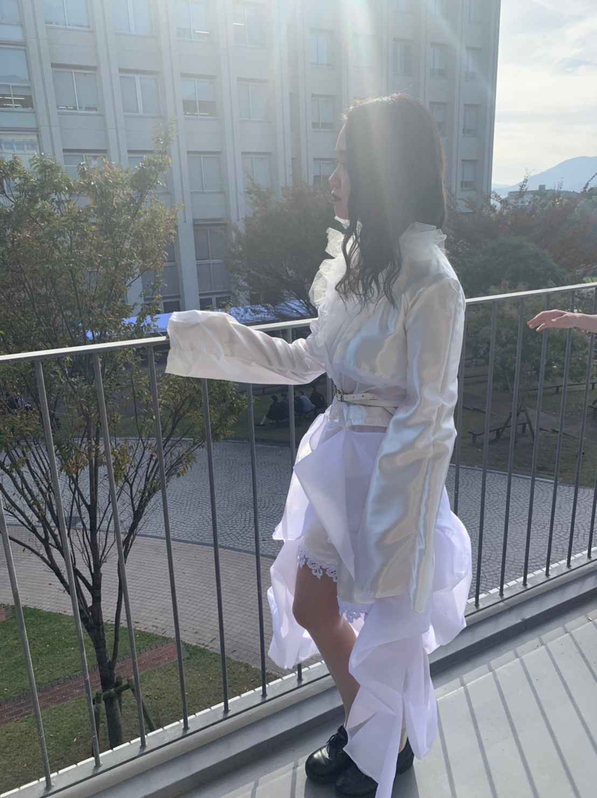
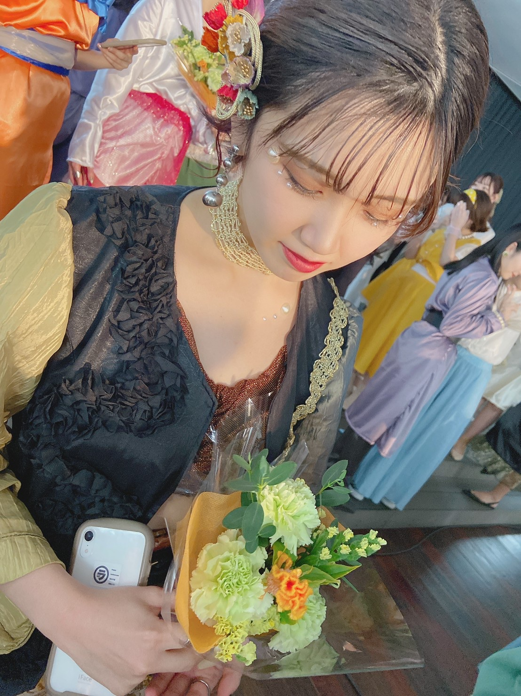
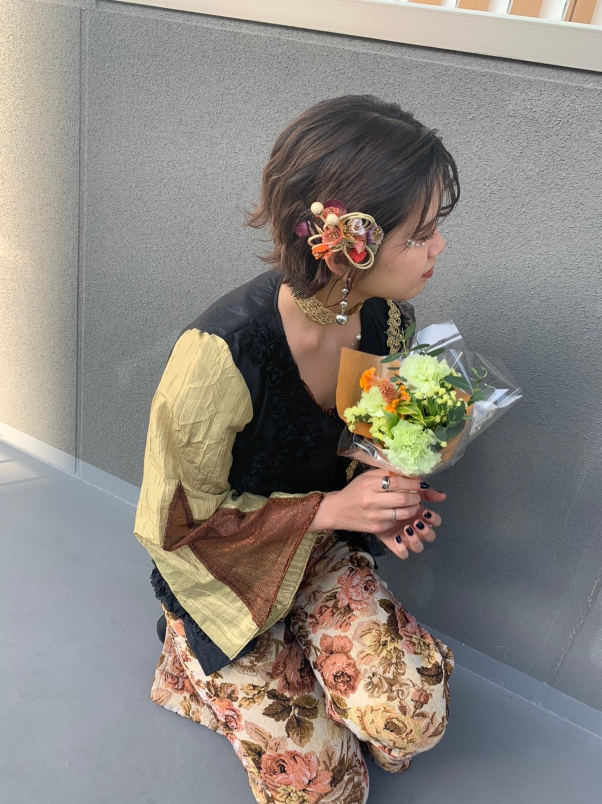

はじめまして桝稚江里と申します。
大学卒業後は福山市にあるアパレルパーツメーカー専門商社で、営業アシスタントを勤めておりました。
現在は職業訓練校にてWebデザインを学習しております。
制作ツール：Illustrator・Photoshop

バナー制作＜クリスマスケーキ①＞
制作時間（制作時間：約1時間）
黒と白で対比を意識したデザインにしました。

バナー制作＜クリスマスケーキ②＞
制作時間（制作時間：約1時間）
カラーを一色に絞り、冬の寒さとクリスマスを感じられるようなデザインにしました。

ショップカード地図制作
制作時間（制作時間：約5時間）
ポップな雰囲気にするために色を温かみのあるものに絞りました。

バレンタインチラシ制作
制作時間（制作時間：約1時間）
あえて商品を二つだけにし、デザイン性のある書体にしてお店に来たくなるようなデザインにしました。

映画フライヤー制作表
制作時間（制作時間：約10時間、制作期間：2日）
ストーリーから全て自分で考え、怖さもありつつ少し可愛らしい感じが演出できるように素材を工夫しました。

映画フライヤー制作裏
制作時間（制作時間：約10時間、制作期間：2日）
表とは少し変わったテイストで表も裏も楽しめるようにデザインしました。

映画フライヤーバナー①
制作時間（制作時間：約1時間）
キャッチコピーを入れ、パッと目がいくようなレイアウトにしました。

映画メインビジュアル制作
制作時間（制作時間：約3時間）
サイトを開いた人が釘付けになるようなインパクトをつけたかったので人形と人間を真ん中に配置しました。
カフェ巡りや旅行が好きで、お店にあるショップカードや店内の雰囲気、メニューのフォントや色使いを見ることを楽しんでいます。
ポストカードやピンズを集めるのも好きです。
デザインの中でも色合いや構図がどうしてそうしたのかを考えながらお気に入りのものを購入して集めています。
また、スポーツ観戦や御朱印集め、音楽も好きでよくライブに行ったりピアノを弾いたりして気分転換しています。



大学生の頃、ファッションデザインサークルに所属しており自分で服を制作しファッションショーを行なっていました。
デザインや制作が好きで現在は職業訓練校で基礎を固めております。Webサイトを通じて情報や魅力を届けることに魅力を感じ、Webデザインを学び始めました。
現在はポートフォリオ制作を通じながらデザインだけでなくHTMLやCSS、JavaScriptを使用した制作にも取り組んでおります。
mail:cmasu0621@docomo.ne.jp